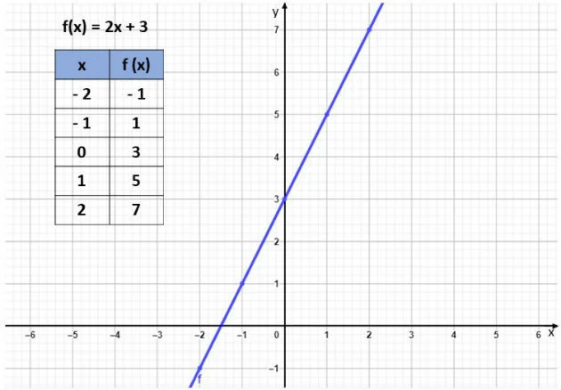
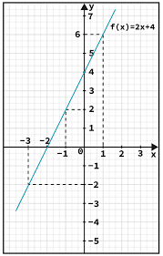
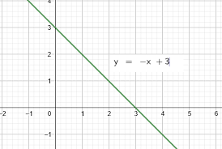

Conceito
Função afim é caracterizada por uma função R->R adotando o seguinte formato: f(x)=ax+b onde a≠0.
Zero da função
Zero ou raíz da função é o ponto onde f(x)=0 portanto para calculá-lo basta igualar a expressão a 0.
Gráfico
Uma função pode ser representada graficamente onde os pontos cartesianos representam (x,y),e no caso da função afim é carcterizado por uma reta. Veja no exemplo a seguir:
Para montá-lo basta achar o zero da função e marcar no gráfico a coordenada em que o mesmo se localiza e achar o ponto em que x=0.Depois basta "ligar" esses pontos
Coeficiente angular
O coeficiente angular é o coeficiente que acompanha o "x" na função afim,ou seja o "a" f(x)=ax+b
Ele determina se a reta é crescente ou decrescente.
Reta crescente:
Reta decrescente
Ele pode ser determinado pela fórmula a=Δy/Δx.Funcionando da seguinte maneira pega dois valores de x quaisquer
Coeficiente linear
O coeficiente linear é o termo independente da função,ou seja,o "b" f(x)=ax+b
Ele diz onde o gráfico "corta" o eixo y,ou seja,quando x=0
Para determiná-lo devemos observar onde a reta está "cortanto" o eixo y